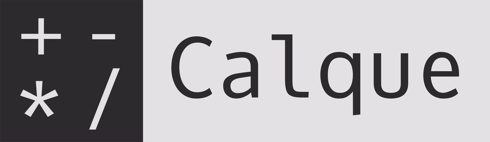

Download
# Calque - reactive calculator # Expressions 2 + 2 * 2 sqrt(3^2 + 4^2) 2 inch to cm cos(45 deg) # Variables a = 25 b = a * 2 postal code = 1122 # Summing lists animals: cats = 2 dogs = 3 plants: trees = 20 vegetables: potatoes = 10 carrots = 10 # Functions pow2(x) = x ^ 2 pow2(6) # Last result 2 * 2 last + 1 # Keys # Duplicate line or selection: Ctrl+D # Change selected number: Up/Down # Change selected number 10x: Shift+Up/Down # Change indent: Tab/Shift+Tab # Zoom in: Ctrl+Shift+Plus # Zoom out: Ctrl+Minus # Themes can be changed via the right click menu. (only in desktop app) # Calque Desktop on Github # https://github.com/unplugred/calque-desktop # Fork of Calque: # https://github.com/grimalschi/calque # Using Math.js: # https://github.com/grimalschi/mathjs